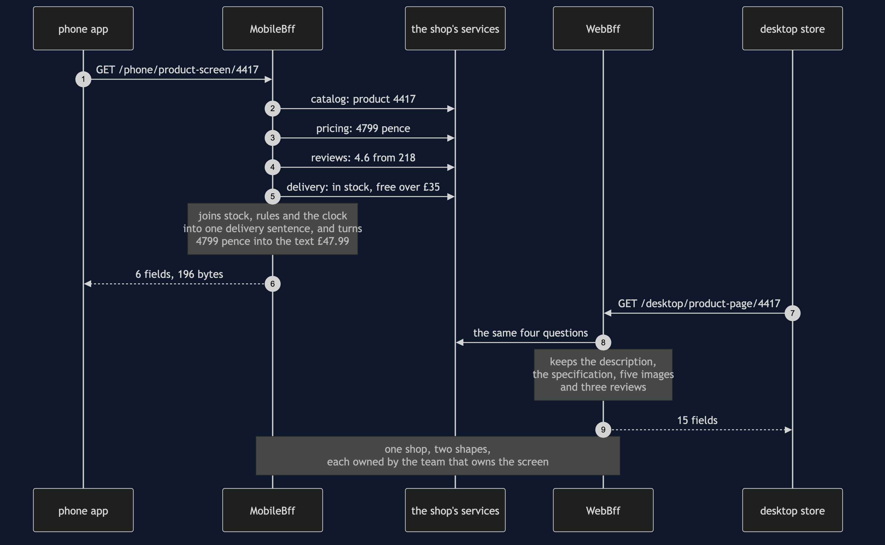

Backends for Frontends Pattern — Sequence Diagram
One product screen drawn twice, in the order the calls happen: once on a phone and once on a desktop, with each device talking to a backend that belongs to it. The architecture diagram says what is running and the data flow diagram counts the bytes; this one says who asks whom, and how many times, before a pixel appears.
Read the phone's half first. The phone makes a single call — to its own backend, naming a screen rather than a resource. That backend then makes four calls of its own, to the catalog, the pricing service, the review service and the delivery service, all of them inside the shop's network where a round trip costs almost nothing. It joins three of those answers into one sentence — free delivery, arriving Friday — turns four thousand seven hundred and ninety-nine pence into the string "forty-seven ninety-nine", throws away everything no phone draws, and sends back six fields and a hundred and ninety-six bytes.
Then read the desktop's half, which is the same shape and a different answer: one call in, four calls behind it, fifteen fields back including the description, the specification, five images and three reviews. Same shop, same second, same product, deliberately different documents.

What the order proves
One arrow leaves the device; four leave the backend. The work did not disappear — it moved onto a network that costs nothing. That is the honest version of the claim this pattern is usually sold with. On office wifi nobody could tell the two designs apart. On a train, where each device round trip is a wait of its own, five sequential calls before a single pixel is the difference between a screen and a spinner.
The shop appears once. Two backends, one set of services behind them. The fix for two screens wanting different data is a second waiter, not a second kitchen: duplicate the shop and you have two places for a price to be calculated, and they will disagree eventually without telling anybody.
The joining happens in a process that can be corrected this afternoon. The delivery sentence and the currency formatting are presentation decisions, and they now live in something the phone team can redeploy today rather than in an app customers will still be running in two years — or in a shared endpoint whose every change has to be agreed with five other clients.
The failure this pattern is bought with — a pricing rule copied into one backend, going quietly out of date, and the two screens making different claims about the same price in the same second — is sequence 4 in uml-diagram.md, along with the rejected designs and the boundary with an API gateway.